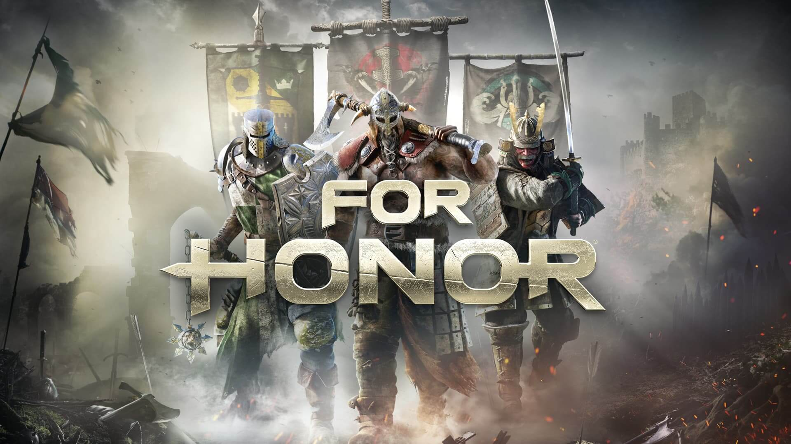
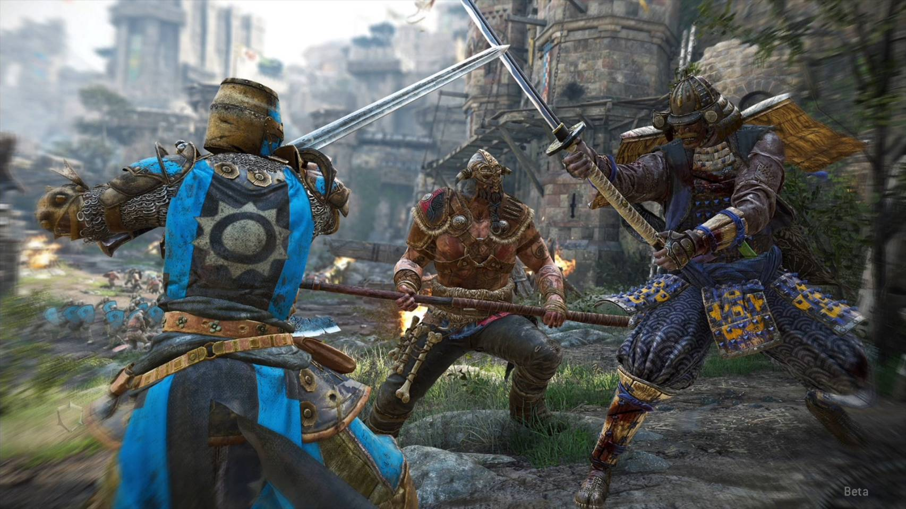
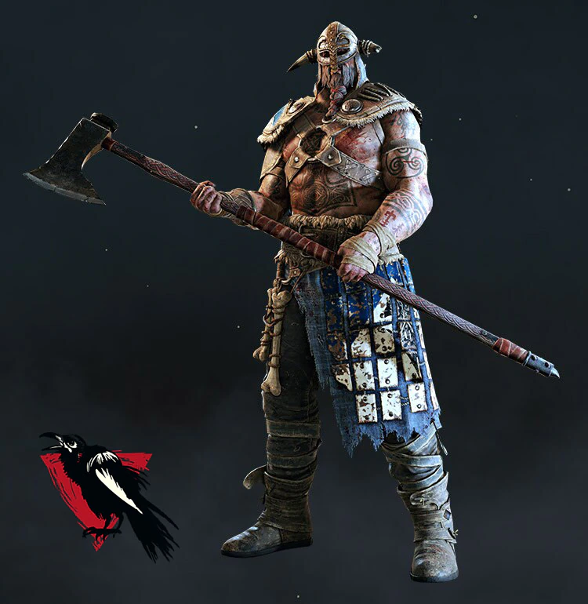
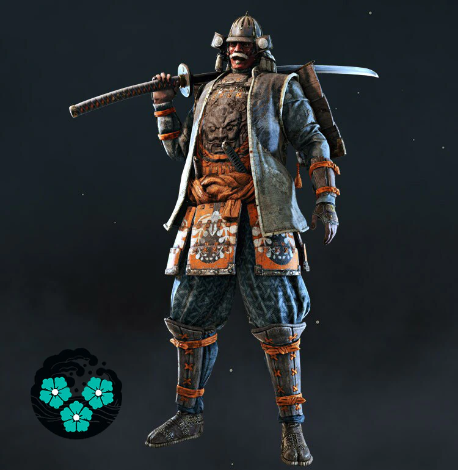
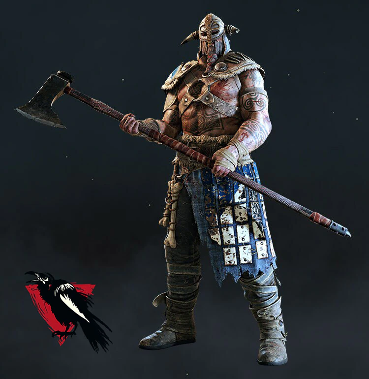
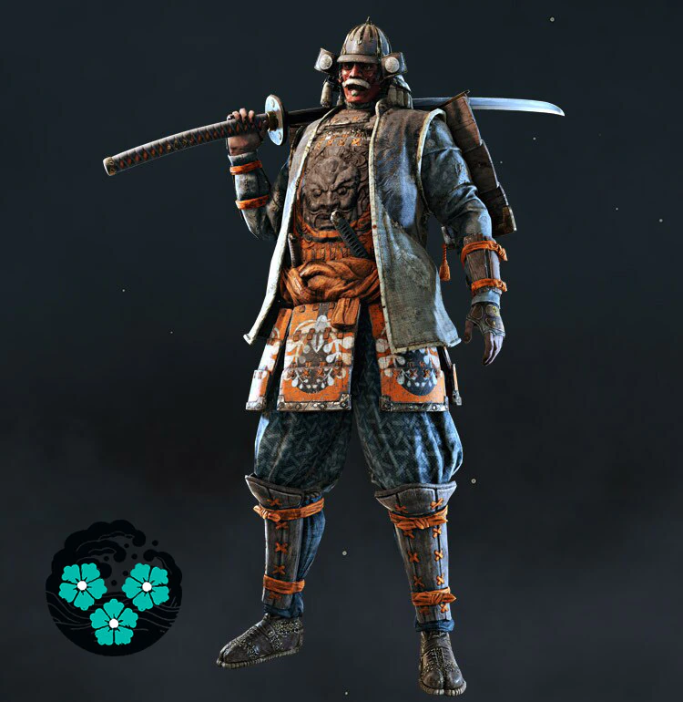
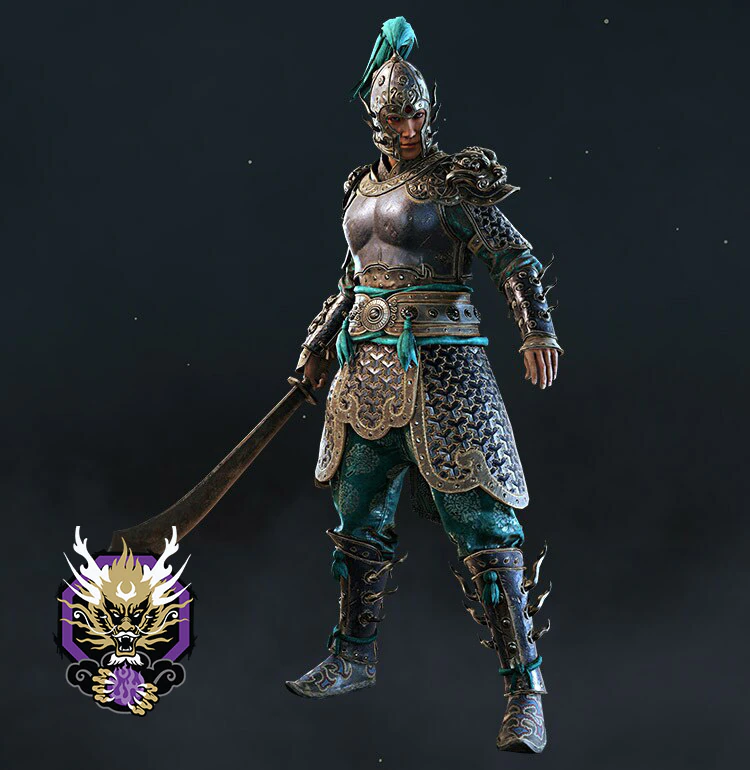
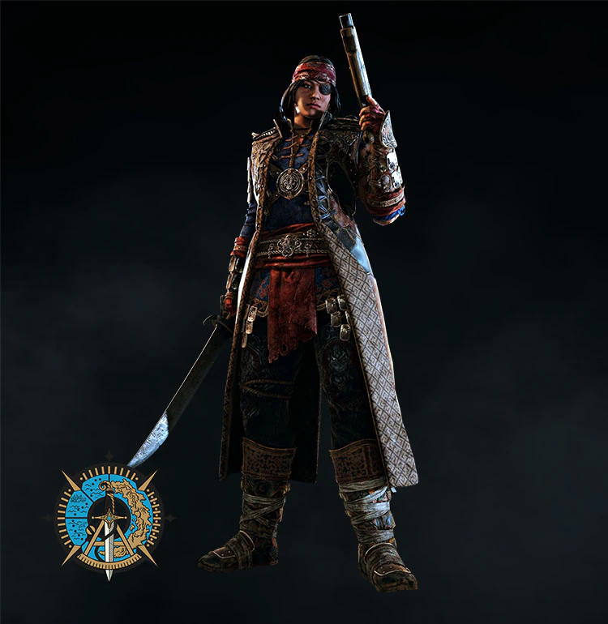
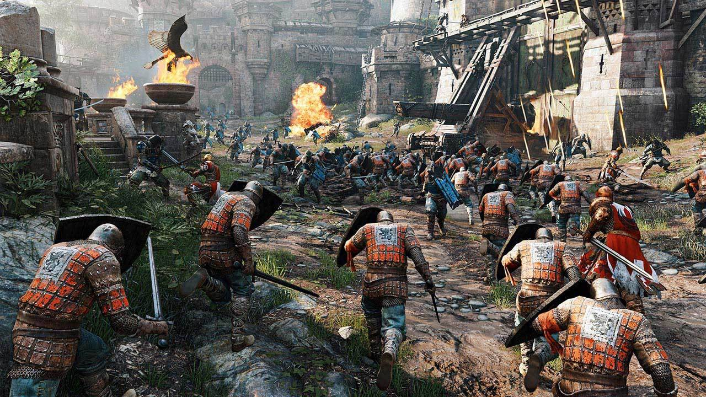

ここでは、私のお気に入りのゲームの一つであるFOR HONOR （フォーオナー） について紹介します !

また、2022年3月17日よりPS/Xbox/PC間のクロスプラットフォームプレイに対応したため、
現在、ゲーム内にはナイト、ヴァイキング、侍、武林、アウトランダーの計５つの勢力 !
・ 拠点を奪い合うバトル 「ドミニオン」

また、 FOR HONOR には 今回紹介できなかった要素が まだたくさんありますので、
1. FOR HONOR ってどんなゲーム？

まずは FOR HONOR とはどんなゲームなのかについてです。
FOR HONOR とは日本語で「名誉のために」と訳され、文字通り、自分たちの名誉を懸けて戦う剣戟アクションオンラインゲームです！
FOR HONOR の概要
| 制作会社 | UBISOFT |
|---|---|
| 発売日 | 2017年2月16日 |
| 対応機種 | PC、PS4、PS5、Xbox One |
| 対象年齢 | 18歳以上 |
また、2022年3月17日よりPS/Xbox/PC間のクロスプラットフォームプレイに対応したため、
現在では今までよりもたくさんの人とマッチングできるようになりました！
2. FOR HONOR の世界
～ヒーローについて～
現在、ゲーム内にはナイト、ヴァイキング、侍、武林、アウトランダーの計５つの勢力 !
そしてその中に下のキャラクターを含む、カスタマイズ可能な３１人のヒーローがいます！
 





プレイヤーはこの中から自分好みのキャラを選び、そのキャラで戦闘に参加できます！
各キャラクターの詳細は こちら から
～各バトルのルールについて～
現在、バトルは以下の６種類あります！
・ 拠点を奪い合うバトル 「ドミニオン」
・生き残ったチームが勝利となるバトル 「エリミネーション」
・NPCを交えたバトル 「スカーミッシュ」
・１対１のバトル 「デュエル」
・２対２のバトル 「ブロウル」
・攻城戦を行うバトル 「ブリーチ」
どのバトルも 白熱した戦闘 を味わうことができます！
どのバトルも 白熱した戦闘 を味わうことができます！
3. まとめ
今回は私のお気に入りのゲーム FOR HONOR についての紹介をしました。
もし興味がでてきたら、ぜひプレイしてみてください！